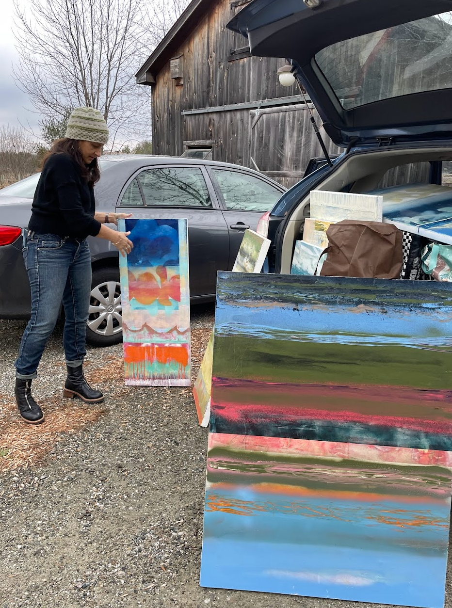
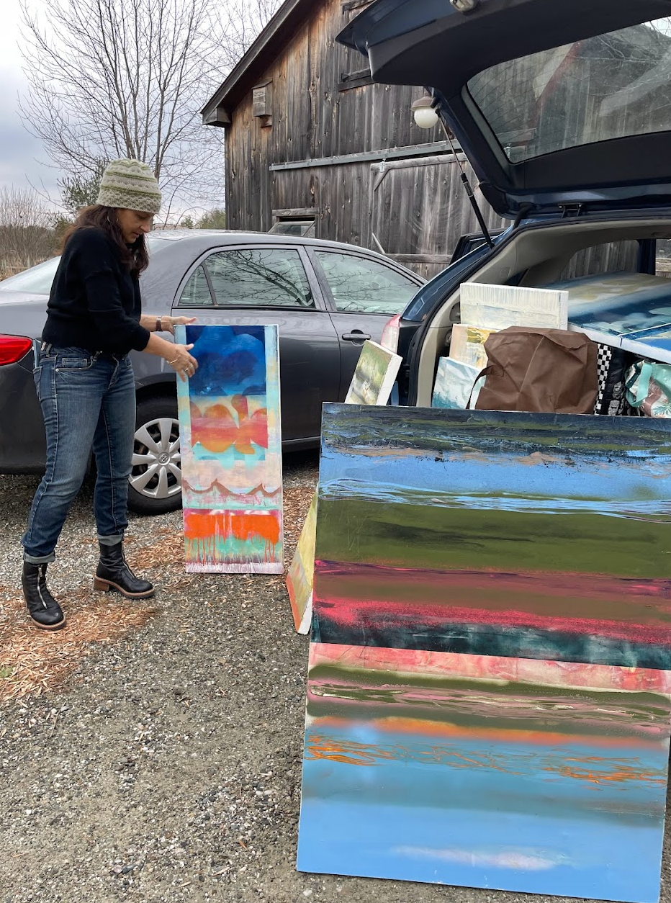

“…Pay attention. Be astonished. Tell about it.”― Mary Oliver
 

I am amazed, and follow a wild reverence. I use paint to translate the structures of horizon and sunlight, the overlapping of internal and external landscapes. I’ve studied fine art at Parson’s School of Design, Tel Aviv University, The University of Vermont, and received my MFA from Vermont College of Fine Art. Mostly I am a student of the spaces between schools - of growing up in New York City and evolving beneath Vermont mountains; of the single mothering of two daughters; the expansive joys of music, language, fresh cut flowers; and the colossal strangeness of living with stage IV metastatic breast cancer. I show up and work from my studio at home in Charlotte, Vermont.